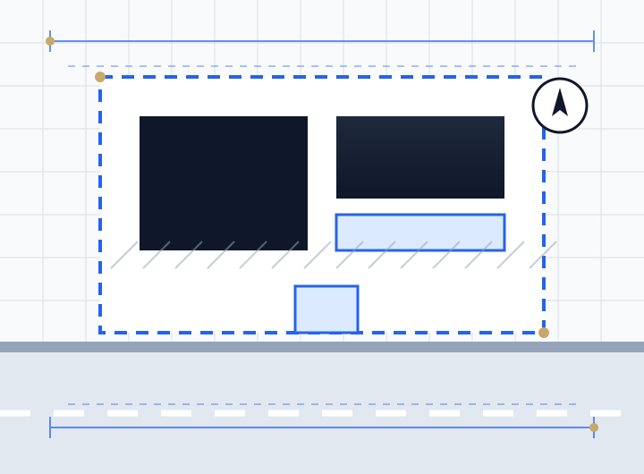

A Land Registry compliant lease plan must be drawn accurately to a stated metric scale with a scale bar, show a north point, identify the floor level of a flat, define the demise clearly (normally edged red), and show any rights such as parking, gardens or bin stores in colours that match the lease wording. It must not say "not to scale" or "for identification only", it needs enough detail to be located on the Ordnance Survey map, and it must be signed by the landlord. Plans that miss any of these usually come back as a requisition.
Lease plans are the smallest drawings we produce and somehow generate the most urgency. They sit on the critical path of a leasehold sale or a new lease grant, and when HM Land Registry raises a requisition against one, the registration simply stops until the plan is fixed.
Almost every one of those requisitions can be avoided. The Land Registry plan requirements are published and fairly clear. The trouble is that many lease plans are produced by people who have never read them, or are copied from an estate agent's brochure.
Key takeaways
- A lease plan defines the legal extent of what is being let. It is a different document from a title plan or a marketing floor plan.
- Leases granted for more than seven years must be registered, and they need a plan that meets HM Land Registry guidance.
- Use a recognised metric scale, state it, add a scale bar and a north point, and never write "not to scale".
- For flats, the plan must say which floor the demise is on. Each floor of a multi-level demise gets its own plan.
- Every colour and edging on the plan must match the words used in the lease.
- A measured survey is the most reliable way to get a plan registered first time.
What is a Land Registry lease plan?
A lease plan is a scaled drawing attached to a lease that shows exactly which part of a building or site is being let (the demise), plus any shared areas or rights that go with it. HM Land Registry uses it to plot the leasehold title against its index map, so it has to be accurate enough to be located on the Ordnance Survey base.
People often confuse it with other plans. Here is how they differ.
| Plan | Who produces it | What it is for | Accepted for lease registration? |
|---|---|---|---|
| Lease plan (demise plan) | Surveyor or CAD technician for the landlord | Defines the area let and the rights granted in a lease | Yes, if it meets the guidance |
| Title plan | HM Land Registry | Shows the general extent of a registered title on the OS map | It is the output of registration, not an input |
| Transfer or conveyance plan | Surveyor for the seller | Defines land being sold when part of a title is transferred | Used for transfers of part, built to the same standard |
| Estate agent floor plan | Marketing photographer or agent | Helps sell the property | No, it is approximate and lacks scale, north point and demise |
When you need a Land Registry compliant plan
Under the Land Registration Act 2002, a lease granted for a term of more than seven years must be registered, along with certain other leases such as those that take effect more than three months after they are granted. A registrable lease of part of a property needs a compliant plan. In practice that covers:
- New leasehold flats, whether in a new build, a conversion or a block being sold off for the first time. Our new build residential design team can draw lease plans for every plot as part of the scheme.
- Houses converted into flats. If you are planning that, our flat conversion drawings service can prepare the lease plans alongside the planning set.
- Lease extensions and lease variations that change the extent of the demise, such as adding loft space, a garden or a parking bay.
- Commercial lease plans for shops, offices and industrial units let for more than seven years.
- Transfers of part, where a slice of a registered title is sold off. These use the same plan standard.
Leases of seven years or less are generally not registrable, so a fully compliant plan may not be strictly required. A clear, accurate plan is still worth having. It records what was actually let and heads off the dispute that surfaces years later when someone puts a shed on land nobody had thought about.
Land Registry plan requirements: the checklist
HM Land Registry sets out its plan requirements in Practice Guide 40 and its supplements, especially supplement 2 on preparing plans for applications. The checklist below follows that guidance and is what we check every lease plan against before it goes out.
| Requirement | What HM Land Registry expects | Common mistake |
|---|---|---|
| Scale | Drawn accurately to a recognised metric scale, with the scale stated and a scale bar | "Not to scale" notes, or an A3 drawing printed on A4 so the stated scale is wrong |
| Orientation | A north point on the plan | North point missing from the floor plan sheet |
| Location | Enough surrounding detail (roads, junctions, landmarks) to find the property on the OS map | A floor plan with no location plan |
| Demise | The extent of the property let shown clearly, conventionally edged red | Balconies, lofts, cupboards or stores left ambiguous |
| Floor level | For flats, the storey or storeys the demise occupies stated on the plan | Floor named only in the lease heading, not on the drawing |
| Rights and shared areas | Accessways, parking, gardens, bin and cycle stores in distinct colours or hatching with a key | Two features in similar colours that cannot be told apart |
| Matching the lease | Every colour and reference agrees with the lease wording | Lease says "edged blue", plan shows it "hatched green" |
| Disclaimers | No "for identification only", "do not scale" or Property Misdescriptions style disclaimers | Template disclaimers left on a surveyor's drawing |
| Signature | Plan signed by the landlord (or seller on a transfer), as rule 213 of the Land Registration Rules 2003 requires | Unsigned plans, or one of several plans left unsigned |
Which scale should a lease plan be?
The guidance prefers 1:1250 to 1:500 for urban property and 1:2500 for rural land such as fields and farms. Those scales suit location and site plans. Individual flats are normally drawn larger so the rooms and boundaries can actually be read.
| Drawing | Typical scale | Purpose |
|---|---|---|
| Flat or unit demise plan | 1:100 or 1:200 | Shows the rooms and exact boundaries of the demise |
| Site or block plan | 1:500 | Shows parking, gardens, bin stores and access routes |
| Location plan (urban) | 1:1250 | Places the building on the Ordnance Survey base |
| Location plan (rural) | 1:2500 | Places larger or rural sites on the OS base |
Colours and edging
Red edging for the demise is the near-universal convention. Other colours (blue edging, green or brown hatching, yellow tinting) are commonly used for retained land, rights of way, parking spaces and shared gardens, but there is no fixed national code. What matters is that each colour is clearly different, is listed in a key, and is described the same way in the lease. If the plan may be photocopied in black and white, add hatching patterns as well as colour.
Lease plans for flats
Flats cause more requisitions than any other property type, because a flat has boundaries in three dimensions.
- Floor identification. The plan itself must state the floor, for example "Second floor". "Flat 4" in the lease heading is not enough.
- Multi-level demises. A maisonette or a flat with a loft room needs a separate plan for each floor, each labelled.
- Internal boundaries. Where the flat meets a communal hallway or stair, the red line needs to be precise about which side of the wall or door the boundary sits.
- External extras. Balconies, roof terraces, garden areas, parking bays and storage cupboards outside the flat must be clearly shown as inside or outside the demise.
- Horizontal boundaries. Whether floor joists, ceilings and roof voids are included is decided by the lease wording. The plan should not contradict it.
Landlords converting houses into flats or HMOs often only think about lease plans at the end. If you are converting, it is worth reading our HMO floor plans and conversion layout guide and planning the lease boundaries while the layout is still on paper.
Commercial lease plans
The same rules apply to shops, offices and industrial units. The usual extra points are shared service yards, loading bays, car parks and plant areas, which need to be shown as rights rather than left vague. A commercial lease plan defines the extent of the premises. It is a different exercise from measuring floor area for rent, so do not rely on a lettings area plan as your lease plan.
The errors that cause requisitions
Using an estate agent's floor plan
By far the most common. Marketing floor plans are drawn to sell a property, not to define a legal boundary. They are usually approximate, rarely carry a stated scale or north point and almost never define the demise. They are not lease plans and should not be submitted as one.
Scale problems
A plan drawn at 1:100 on A3 and printed on A4 is no longer at 1:100, so the stated scale is now wrong. This happens constantly. A scale bar on the sheet solves it, because the bar shrinks with the drawing.
Ambiguous demise
If it is not immediately clear whether a balcony, a loft space, a hallway cupboard, a section of garden or a bin store sits inside or outside the red line, the Registry will ask. Every boundary needs to be unambiguous, including internal ones where the demise meets communal space.
Colours that do not match the lease
If the lease grants a right of way over land "shown edged blue" and the plan shows it hatched green, that is a requisition. Check the plan and the lease against each other before anything is signed.
Missing floor identification
For flats, the storey must be on the plan. "First floor flat" in the lease heading is not the same thing.
Unsigned plans
Plans attached to a lease of part must be signed by the landlord. Where there are several plans, every one of them needs signing. Missing signatures are a simple and avoidable reason for an application to be rejected.
What a good lease plan pack contains
- A demise plan at 1:100 or 1:200 showing the leased area edged red, with room layout, north point, stated scale and scale bar, and the floor level clearly identified.
- A location plan at 1:1250 on an Ordnance Survey base, identifying the building in its street context.
- Where relevant, a site or ground floor plan showing parking spaces, gardens, bin and cycle stores and access routes, colour-keyed to the lease wording.
- Where the demise covers more than one storey, a separate plan for each floor, each labelled.
- Print-ready PDFs at true scale, with CAD files available for the conveyancer or managing agent.
How we produce a compliant lease plan
Every Land Registry lease plan we draw follows the same steps, so that the plan is registered without a query. If you have a deadline, send us the address and draft lease for a fixed quote.
- Instruction and scope. We confirm the address, the number of demises, the rights to be shown and whether there is a draft lease to match.
- Measured survey. We measure the demise and its position in the building, or use existing drawings only where they are accurate and reliable, and say so on the plan.
- Draft plans. We draw the demise, site and location plans to stated scales with a north point, scale bar, floor labels and colour key.
- Lease check. We compare every colour and description with the draft lease wording and flag any mismatch to the conveyancer.
- Issue. We supply signed-ready PDFs and source files, with an agreed round of revisions included in the fixed fee.
We work with conveyancers, freeholders, managing agents and developers, and our about page explains how our version control and CAD standards keep plans consistent across a whole block.
How long it takes and what affects the cost
For a straightforward flat that can be accessed for survey, a compliant plan can normally be produced within a few working days, and faster where reliable existing drawings are available. What adds time is finding on site that the property does not match the drawings: unrecorded extensions, moved walls, or a demise that includes loft space nobody mentioned.
The fee depends on whether a survey is needed, how many units are being plotted, how many rights and shared areas must be shown, the size of the building and how urgent the sale is. For broader context on drawing fees, see our architectural drawings cost guide for 2026. We work remotely across the UK, including London, Manchester, Birmingham and Leeds.
Frequently asked questions
What is a Land Registry compliant lease plan?
It is a lease plan that meets HM Land Registry's plan guidance: drawn accurately to a stated metric scale with a scale bar, showing a north point, the floor level for flats, a clearly defined demise usually edged red, and any rights in colours that match the lease. It carries no "not to scale" wording and is signed by the landlord.
What scale should a Land Registry lease plan be?
Any recognised metric scale, stated on the plan with a scale bar. Flat demise plans are usually 1:100 or 1:200, site plans 1:500, and location plans 1:1250 in towns or 1:2500 for rural land.
Can I use an estate agent's floor plan as a lease plan?
No. Marketing floor plans are approximate and normally lack a stated scale, north point, floor identification and clear demise. They are one of the most common causes of a Land Registry requisition.
What is the difference between a lease plan and a title plan?
A lease plan is drawn for the landlord and attached to the lease to define what is let. A title plan is produced by HM Land Registry after registration and shows the general extent of a registered title on the Ordnance Survey map.
Which leases need a Land Registry plan?
Leases granted for more than seven years, and certain others such as leases starting more than three months after grant, must be registered. If the lease covers part of a building or site, it needs a compliant plan.
Do I need a new lease plan for a lease extension?
Often the new lease can refer to the original plan if that plan was compliant and the extent has not changed. If the original plan is poor, or the demise is changing, a new compliant plan is usually needed. Your conveyancer will confirm which applies.
Does a lease plan need to be signed?
Yes. Under rule 213 of the Land Registration Rules 2003, plans attached to a lease of part must be signed by the landlord, and every plan must be signed where there is more than one.
How long does it take to get a lease plan?
For a straightforward flat that can be surveyed, usually a few working days. Larger buildings, several demises or properties that differ from existing drawings take longer.